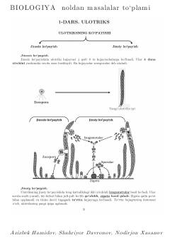

BNBiologiya fanidan masalalar yechishni o'rganish uchun amaliy qo'llanma.
Ushbu qo'llanma biologiya fanidan noldan boshlab masalalar yechishni o'rganish uchun mo'ljallangan. Kitobda turli murakkablikdagi masalalar va ularning yechimlari keltirilgan bo'lib, abituriyentlar va o'quvchilar uchun foydali manba hisoblanadi.